السلسلة 31
السيارة (صنف B) · 40 سؤال. كل سؤال فيه الصورة والصوت. اختار الجواب (ولا جوج إلا كانو صحاح)، ورك على «تأكيد» باش تشوف واش صبتي.
- 40سؤال
- 32باش تنجح
- 1 – 4جواب واحد ولا أكثر
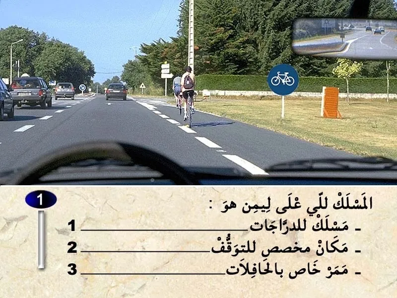
الكلافيي: 1–4 للجواب، Enter للتأكيد وللسؤال الجاي.
السلسلة 31 · النتيجة ديالك
0 / 40
السلسلة 31
السيارة (صنف B) · 40 سؤال، بالصوت، مع الجواب الصحيح والشرح.
السؤال 1
بيّن الجواب
الجواب الصحيح: 1
العلامة الطّرقية تعني أن المسلك المتواجد على اليمين هو خاص بالدرّاجات.
السؤال 2
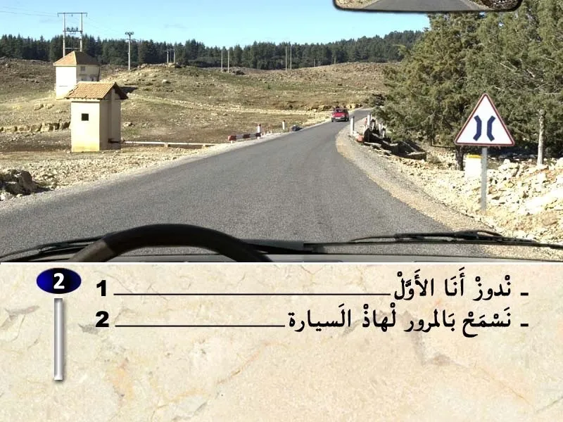
بيّن الجواب
الجواب الصحيح: 2
العلامة الطّّرقية تعني على أن الطريق ضيّقة على مسافة محدودة، وهذه العلامة ليس لها قاعدة تقول لنا من له حق الأسبقية في المرور أولا، لذلك من أداب الطريق العربة التي تصل أولا تقوم بالمرور أولا، وبما أن السيّارة المقابلة هي التي وصلت أولا فلديها حق الأسبقية في المرور ويجب عليّ السماح لها بالمرور أولا.
السؤال 3
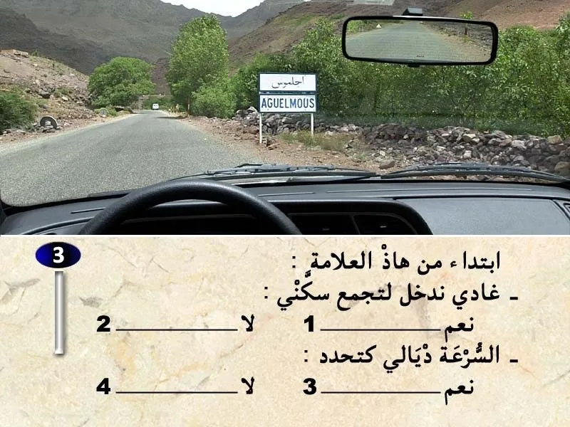
بيّن الجواب
الجواب الصحيح: 1 و 3
العلامة الطّرقية تشير إلى إسم مجمّع سكني ( أجلموس)، عندما تتقابل مع علامة طرقية مثل هذه وتحتوي على إسم مدينة أو تجمع سكني فهي تعني أنه سوف ندخل في تجمع سكني، وبما أننا سوف ندخل في تجمع سكني فسوف نطبّق جميع القواعد التي نستعملها داخل تجمع سكني. مثلا ممنوع إستعمال المنبه الصوتي إلاّ للضرورة، وأيظا السرعة تصبح محددة في 60 كلم في الساعة و إلخ.
السؤال 4
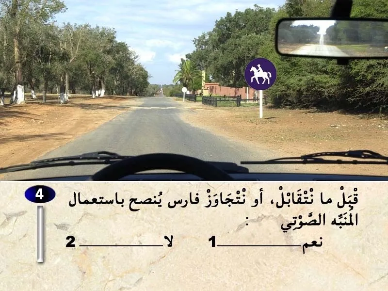
بيّن الجواب
الجواب الصحيح: 2
دائما في عملية التّجاوز خارج المدينة وفي النهار يمكننا إستعمال المنبّه الصوتي أو التنبيه بالإشارة الضوئية، لكن في هذه الحالة توجد قاعدة تمنعنا من إستعمال المنبّه الصوتي للرّاجلين وللحيوانات، إذن في هذه الحالة فيوجد راجل وحيوان، إذن لا ينصح بإستعمال المنبّه الصوتي.
السؤال 5
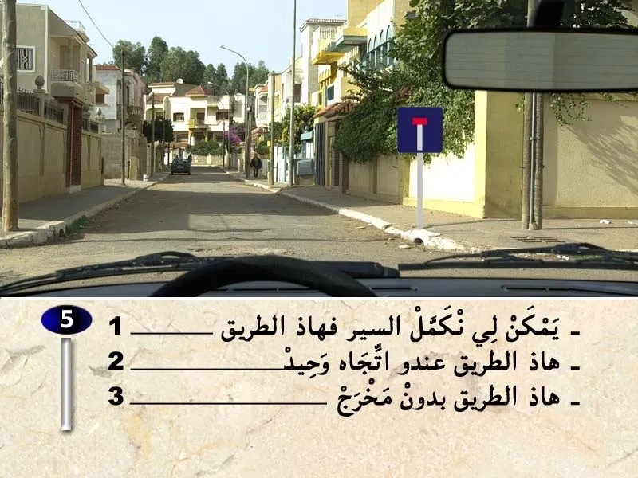
بيّن الجواب
الجواب الصحيح: 1 و 3
العلامة الطّرقية فهي تعني أن الطريق بدون مخرج، وعلامات الإرشاد لا تجبرنا ولا تمنعنا فهي فقط ترشدنا وتعلمنا على شيئ ما، وفي هذه الحالة فهي تعلمنا على أن هذه الطريق ليس بها مخرج، كما أنه يمكننا إكمال السير في هذه الطريق لأن العلامة كما ذكرنا لا تمنعنا فهي فقط تعلمنا وتشردنا على أن الطريق بدون مخرج ولا تمنعنا من إكمال السير في هذه الطريق.
السؤال 6
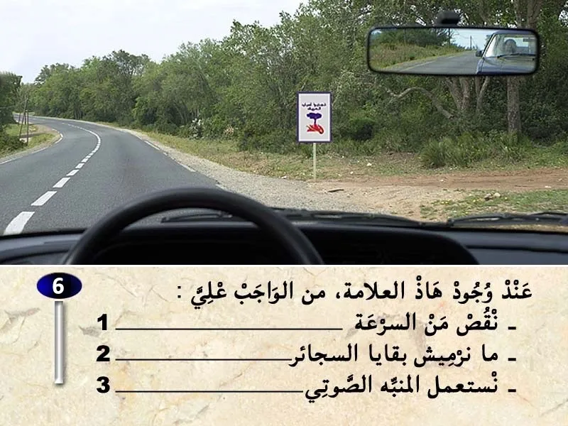
بيّن الجواب
الجواب الصحيح: 2
العلامة الطّرقية لا تشير إلى الإنقاص من السّرعة، ولا تعني كذلك أن لا أستعمل المنبّه الصوتي، بما أن العلامة الطّرقية تحتوي على رمز النار فهذا يعني أن المكان تشتعل فيه النار بسرعة، لذلك لا يجب أن أرمي بقايا السجائر وكذلك لا جب رمي أي شيئ اخر قد يوقد النار.
السؤال 7
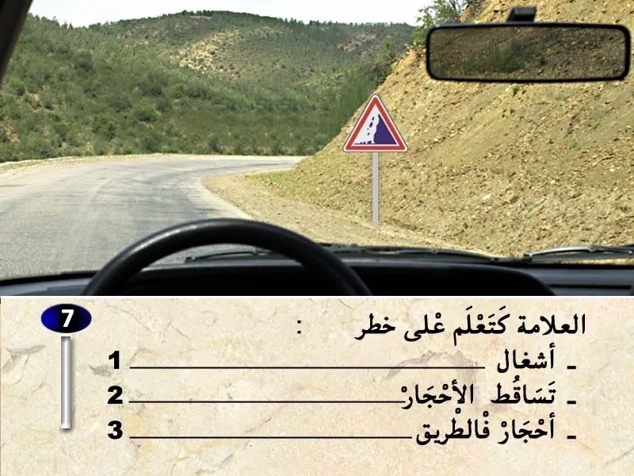
بيّن الجواب
الجواب الصحيح: 2 و 3
العلامة تشير إلى خطر تساقط الأحجار، كما أنه إذا تساقطت الأحجار فسوف أجد الأحجار على الطريق، تساقط الأحجار سوف يكون على الطريق وليس في مكان اخر.
السؤال 8
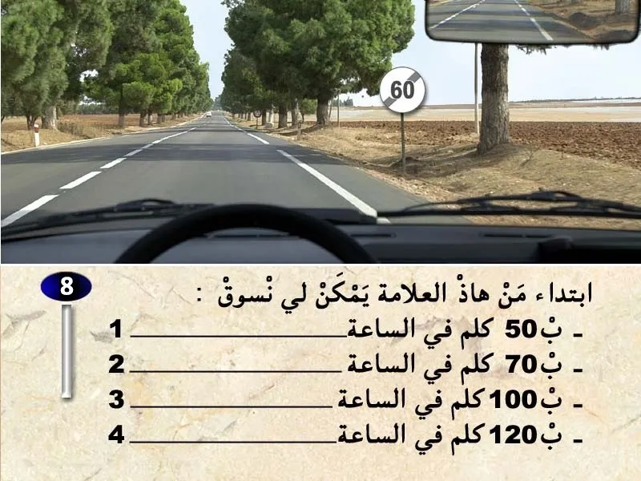
بيّن الجواب
الجواب الصحيح: 1 و 2 و 3
العلامة الطّّرقية تعني نهاية المنع الذي كان سابقا، أي نهاية تحديد السرعة 60 كلم في الساعة، قبل هذه العلامة كان لدينا علامة المنع بالأحمر ل 60 كلم في الساعة أي ممنوع تجاوز سرعة 60 كلم في الساعة، والان مع هذه العلامة الطّرقية فلقد إنتهى المنع الذي كان سابقا، وبما أننا خارج المدينة أي في طريق وطنية والسرعة القصوى فيها محددة في 100 كلم في الساعة، إذن يمكنني إبتداء من هذه العلامة أن أسوق بسرعة 50 كلم في الساعة وكذلك يمكنني أن أسوق بسرعة 70 كلم في الساعة، وأيظا يمكنني أن أسوق ب 100 كلم ف الساعة كحد أقصى.
السؤال 9
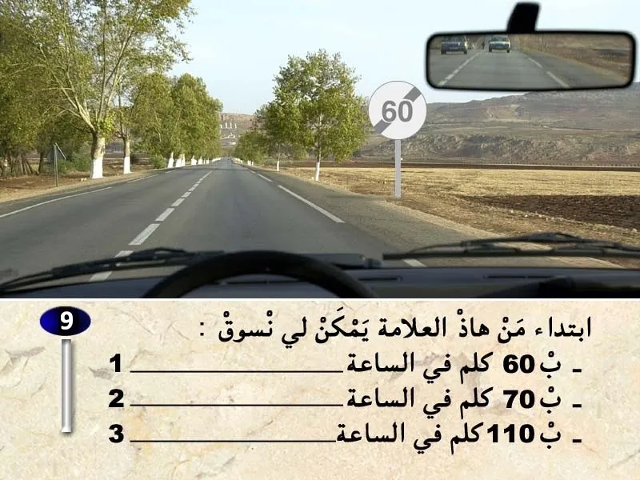
بيّن الجواب
الجواب الصحيح: 1 و 2
نتواجد خارج المدينة، وخارج المدينة وفي طريق وطنية السّرعة محدودة في 100 كلم في الساعة، بالنسبة للعلامة الطّرقية فهي تعني نهاية تحديد السرعة في 60 كلم في الساعة (قبل هذه العلامة كانت هنالك علامة دائرية بالأحمر تشير إلى أن السرعة محدودة في 60 كلم في الساعة) والان إنتهى هذا المنع مع هذه العلامة الطّرقية. إذن الان بما أن المنع قد إنتهى فيمكننا السّير بأي سرعة نريدها في حدود 100 كلم في الساعة لأننا نتواجد في طريق وطنية، إذن الإجابة الصحيحة 1 و 2.
السؤال 10
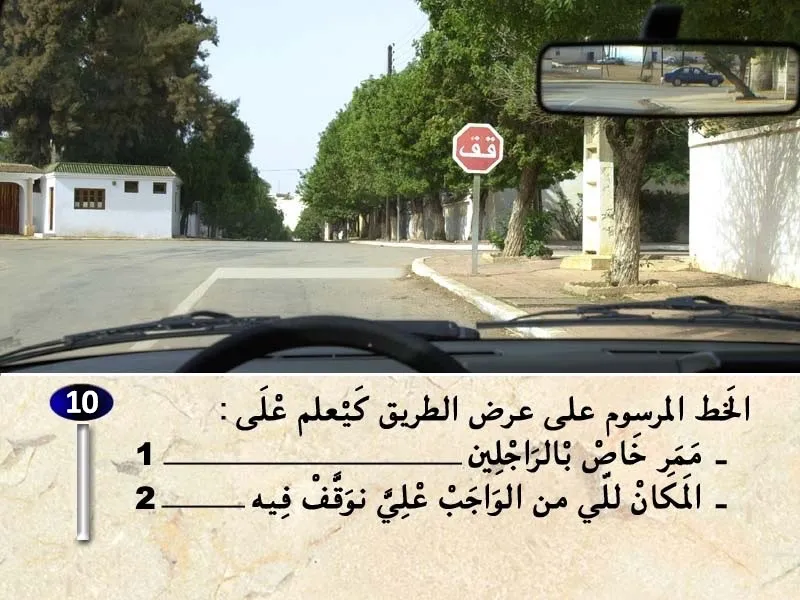
بيّن الجواب
الجواب الصحيح: 2
الخط المرسوم على الأرض يشير إلى علامة قف وأنه يجب عليّ الوقوف ولا يشير إلى ممر الراجلين، لأن خط ممر الراجلين ليس بهذا الشكل.
السؤال 11
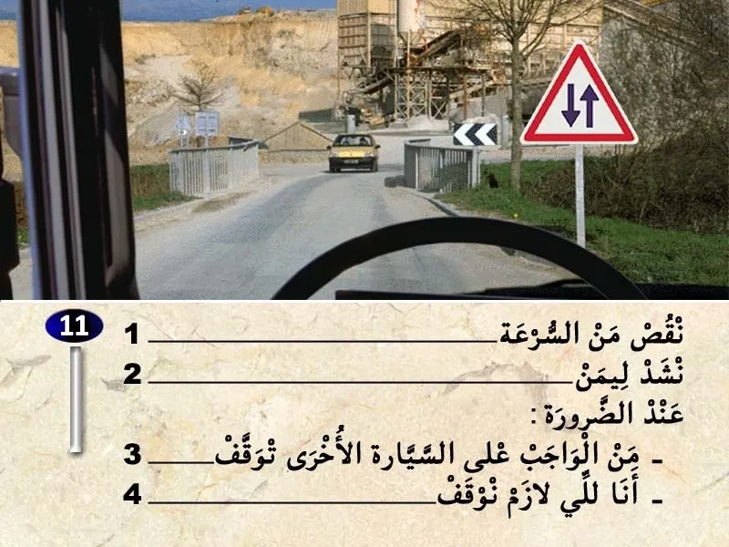
بيّن الجواب
الجواب الصحيح: 1 و 2 و 4
العلامة الطّرقية تعني أن الطريق ذات إتجاهين، أول شيئ نقوم به عندما نجد علامة الخطر فيجب علينا الإنقاص من السرعة، وبما أننا نتواجد في قنطرة ولا يمكن لسيارتين معا المرور في ان واحد والسيارة المقابلة تتواجد هي الأولى في القنطرة فيجب علي أن أنحاز إلى اليمين لكي أسهل عليها عملية المرور، (في القنطرة لا توجد أسبقية المرور، العربة التي تدخل أولا في القنطرة هي التي لديها أسبقية المرور) في هذه الحالة بما ان السيارة المقابلة هي التي تتواجد هي الأولى في القنطرة فيجب عليّ الوقوف والسماح لها بالمرور أولا.
السؤال 12
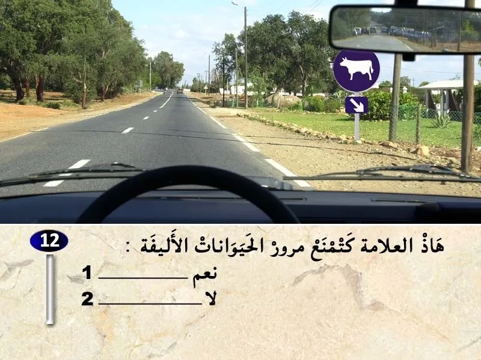
بيّن الجواب
الجواب الصحيح: 2
علامات المنع هي العلامات التي تكون تحتوي على دائرة على الجوانب باللون الأحمر، أما بالنسبة لمثل هذه العلامات الطرقية التي تكون باللون الأزرق فهي تعني على أنه مكان خاص أو تعني في بعض الحالات الإجبار وذلك على حسب الرمز الذي يكون فيها، في هذه الحالة، هذه العلامة الطّرقية تعني على أن المكان الذي يشير إليه السّهم فهو مكان خاص بالحيوانات الأليفة. ولا تعني منع مرور الحياوانت الأليفة.
السؤال 13
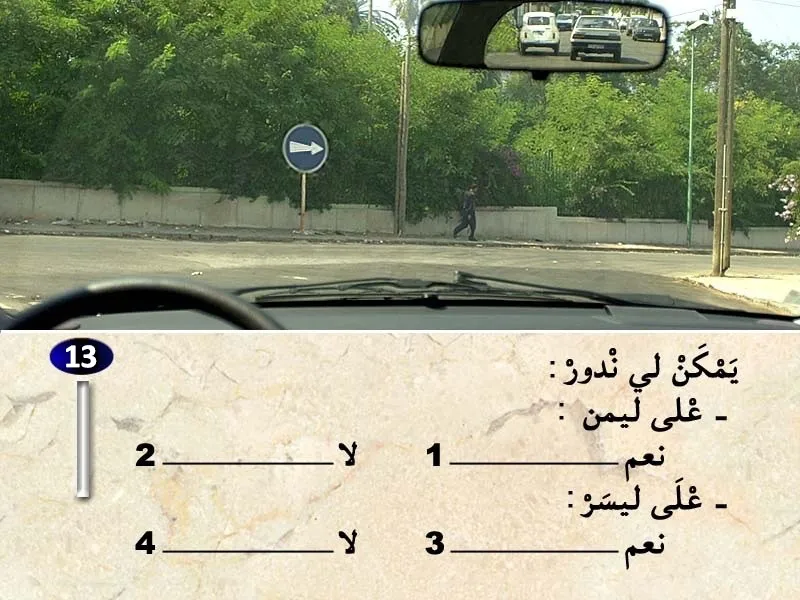
بيّن الجواب
الجواب الصحيح: 1 و 4
العلامة الطّرقية هي خاصة بالإجبار، تجبرني في هذه الحالة للإنعطاف على اليمين، إذن يمكنني الإنعطاف على اليمين ولكن لا يمكنني الإنعطاف على اليسار.
السؤال 14
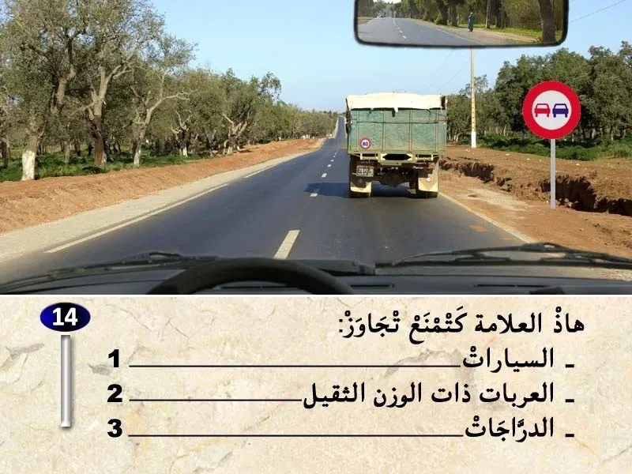
بيّن الجواب
الجواب الصحيح: 1 و 2
العلامة الطّرقية تعني أنه ممنوع التّجاوز بالنسبة للعربات ذات محرك، يعني ممنوع عليّ أن أقوم بتجاوز العربات ذات محرك و 4 عجلات، مثلا لا يمكنني تجاوز السيارات، ولا يمكنني تجاوز عربات الوزن الثقيل بجميع أنواعها لأنها ذات محرك و 4 عجلات ولكن يمكنني تجاوز أصحاب الدراجات بجميع أنواعها لانها ذات عجلتين فقط.
السؤال 15
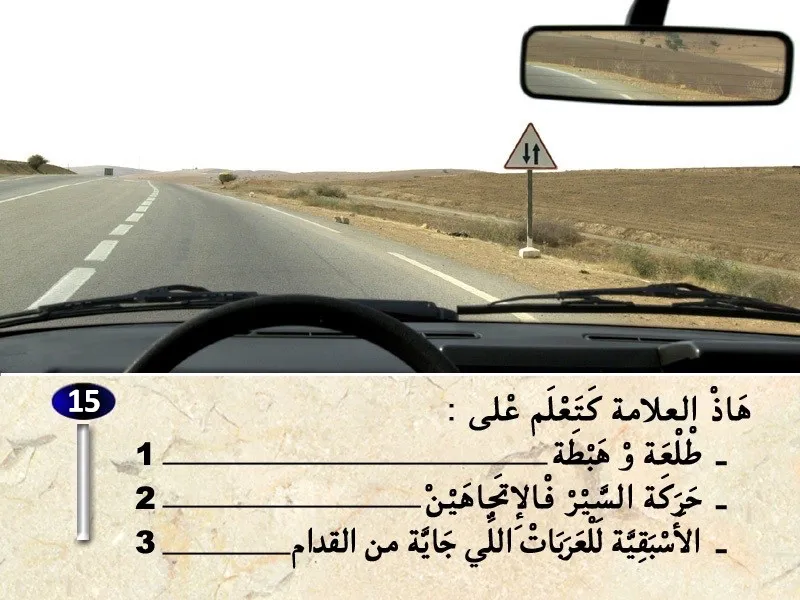
بيّن الجواب
الجواب الصحيح: 2
العلامة الطّرقية تعني انتباه خطر السير سوف يصبح في اتّجاهين (أي في مسلكين). هذه العلامة فهي علامة الخطر الوحيدة التي تبدأ من عند العلامة وليس على بعد 50 متر أو 150 متر (للشرح أكثر كما نلاحظ في الصورة الان يوجد 3 مسالك للسّير، مسلكين 2 خاصين بي، ومسلك واحد للسيارات القادمة في الاتجاه المعاكس. العلامة الطّرقية تشير على خطر السّير في الاتّجاهين سوف يبدأ الان وهذا واضح أيضا من خلال الخطوط المتقطّعة على اليسار، وقربها من بعضها البعض يشير إلى أن الخط سوف يصبح متّصل. أي أنه سوف يصبح هنالك فقط 2 مسالك للسّير، واحد لي وواحد اخر للسيارات القادمة في الاتجاه المعاكس وليس 3 مسالك كما هو الحال الان).
السؤال 16
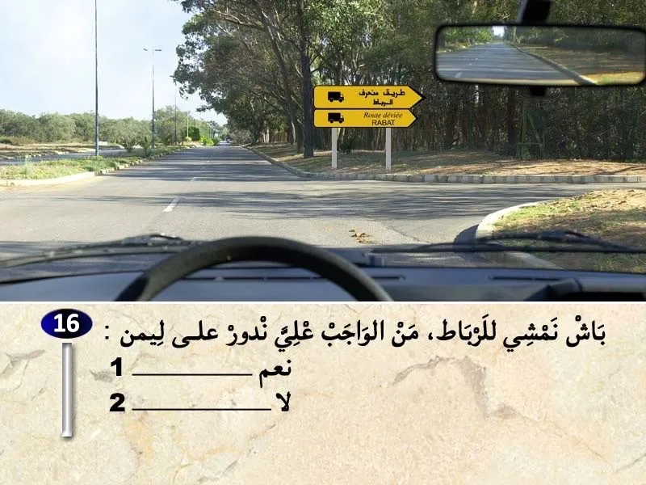
بيّن الجواب
الجواب الصحيح: 2
العلامة الطّرقية المؤقتة تعني أن الطريق منحرف، بالنسبة لهذه العلامة فهي لا تجبرنا على الإنعطاف لليمين وكذلك لا تجبر العربات الثقيلة للإنعطاف لليمين فهي علامة للإرشاد فقط لعلامة كانت قبل هذه العلامة الطّرقية
السؤال 17
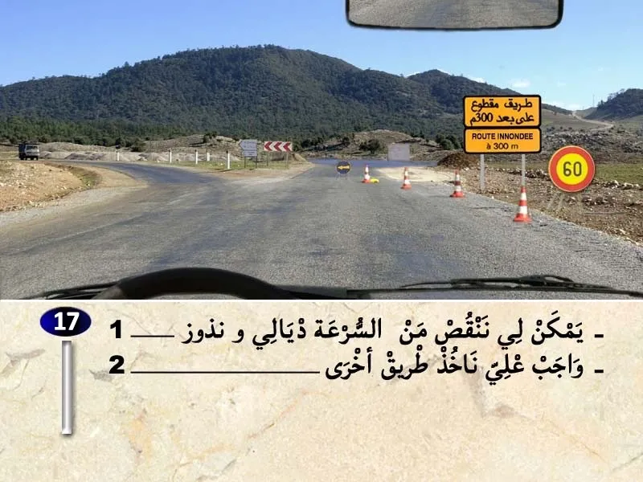
بيّن الجواب
الجواب الصحيح: 2
قدّامي لوحة صفراء كتقول طريق مقطوع على بُعد 300 متر، ومعها حواجز كتسدّ المسار. هاد التشوير مؤقّت ولكن إلزامي بحال التشوير الدائم تماماً: كينبّه أنّ الطريق غير صالحة للسير بسبب فيضان/ماء أو أشغال خطيرة. في هاد الحالة ماشي غير “خطر”، بل انقطاع للطريق، وبالتالي ممنوع نغامر وننقص السرعة وندوز. العمق ديال الماء ما معروفش، وممكن نعرّض راسي والناس للخطر. علامة 60 كلم/س ما كتمنحش الإذن بالمرور وسط الانقطاع؛ هي غير لتخفيف السرعة قبل منطقة الخطر. الواجب القانوني هنا هو: نخفّض السرعة، نوقف قبل الحواجز، ونتبع مسلك التحويل أو ناخد طريق أخرى لان الطّريق مقطوعة. عدم الامتثال للتشوير المؤقّت والحواجز كيعتبر مخالفة ويعرّضك للعقوبات. الخلاصة: ملي تشوف “طريق مقطوع” مع حواجز، ما كتدوزش كيف ما كان، بل كتبدّل المسار وتتبع طريق بديل. الجواب الصحيح هو رقم 2.
السؤال 18
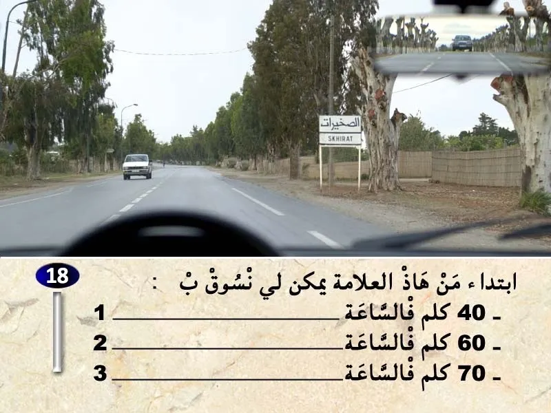
بيّن الجواب
الجواب الصحيح: 1 و 2
العلامة الطّرقية تحتوي على إسم تجمع سكني (الصخيرات)، وبما أننا سوف ندخل لتجمع سكني فالسرعة داخل تجمع سكني محددة في 60 كلم في الساعة كسرعة قصوى، إذن يمكني السير بأي سرعة دون تجاوز 60 كلم في الساعة.
السؤال 19
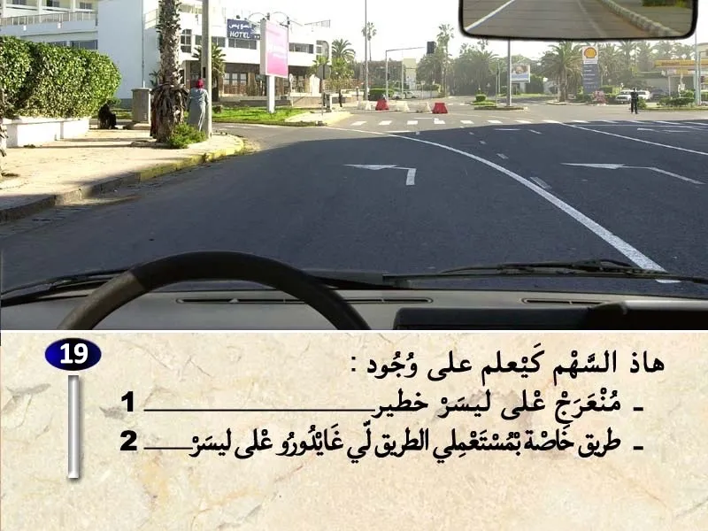
بيّن الجواب
الجواب الصحيح: 2
بالنسبة للتشوير الطرقي السهم المرسوم على الأرض فهو يشير الإجبار للإنعطاف على اليسار بما أننا نتواجد في هدا المسلك، ولا يعني أنه منعرج خطير على اليسار.
السؤال 20
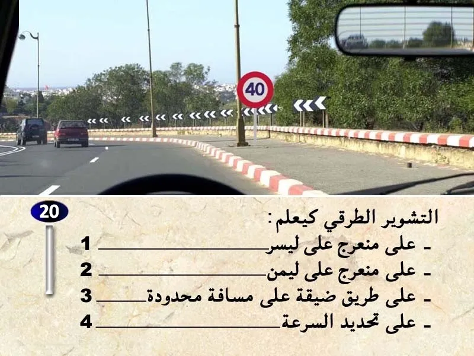
بيّن الجواب
الجواب الصحيح: 1 و 4
العلامة الطّرقية تعني تحديد السرعة في 40 كلم في الساعة، وبالنسبة للعلامة الطّرقية أسهم ذات اللون الأزرق والأبيض فهي تعني أنه يوجد منعرج على اليسار.
السؤال 21
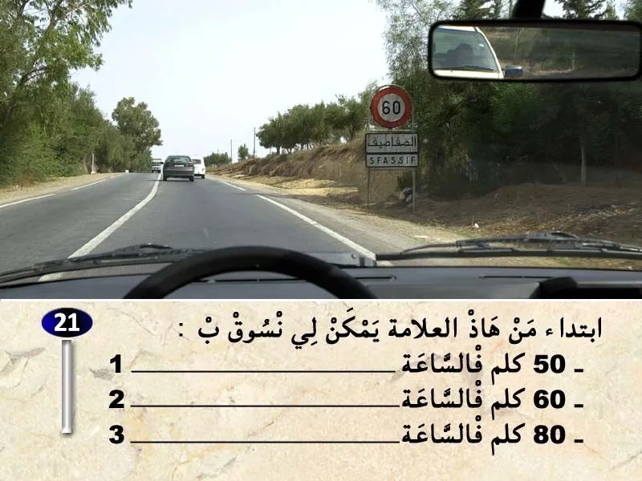
بيّن الجواب
الجواب الصحيح: 1 و 2
العلامة الطّّرقية تعني تحديد السرعة في 60 كلم في الساعة، إذن يمكنني السياقة بسرعة 50 كلم في الساعة أو 40 كلم في الساعة أو 60 كلم في الساعة، فقط لا يجب أن نتعدى سرعة 60 كلم في الساعة لأن العلامة الطّرقية تمنع السير بسرعة أكثر من 60 كلم في الساعة، لكن لا تمنعنا من السياقة بسرعة أقل من ذلك.
السؤال 22
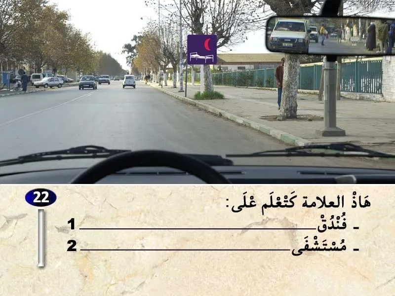
بيّن الجواب
الجواب الصحيح: 2
العلامة الطّرقية الخاصة بالإرشاد فهي تعني عن وجود مستشفى. (بالنسبة لعلامات الإرشاد فهي لا تجبرنا ولا تمنعنا، هي فقط علامات للإرشاد عن شيئ ما) وهي علامة وضع أي أن قرب العلامة سوف نجد المستشفى.
السؤال 23
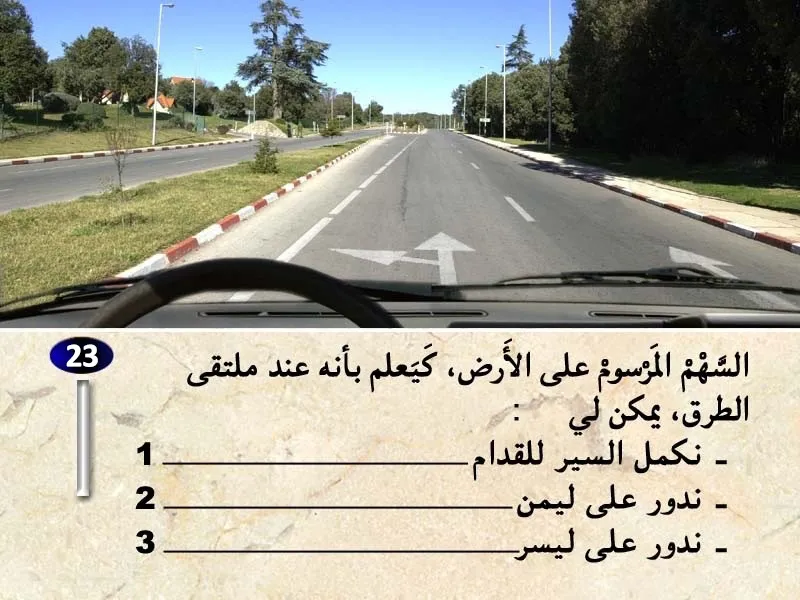
بيّن الجواب
الجواب الصحيح: 1 و 3
بالنسبة للتشوير الطّرقي الأسهم المرسومة على الأرض فهي تعني أنه في ملتقى الطّرق القادم يمكنني إكمال السير إلى الأمام أو الإنعطاف لليسار كما يشير إليه إتّجاه الأسهم المرسومة على الأرض (الأمام واليسار).
السؤال 24
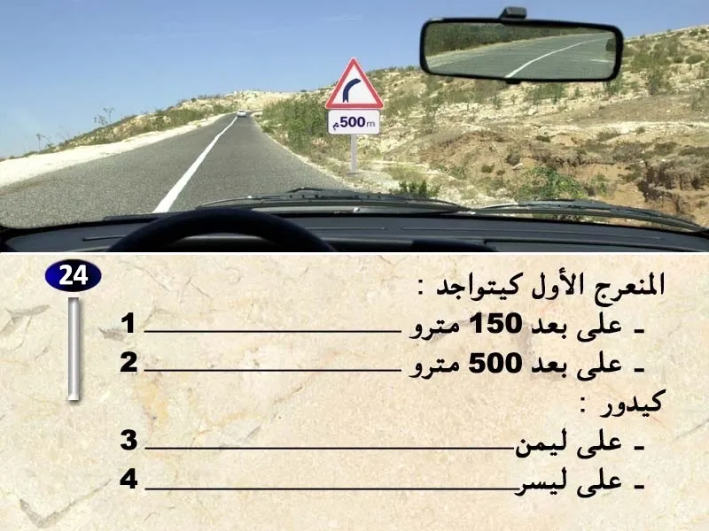
بيّن الجواب
الجواب الصحيح: 2 و 3
العلامة الطّّرقية تعني خطر منعرج على اليمين، علامات الخطر يتم تطبيقها على بعد 50 متر داخل المدينة و على بعد 150 متر خارج المدينة، ولكن الان توجد علامة تكميلية لذلك سوف نلغي القاعدة العامة التي تقول الخطر خارج المدينة يبدأ على بعد 150 متر، لأنه الان الخطر يتواجد على بعد 500 متر كما توضّحه العلامة التكميلية.
السؤال 25
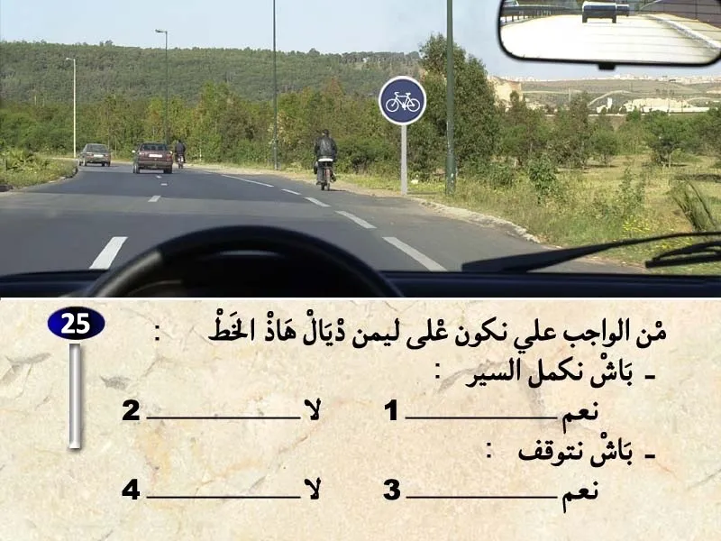
بيّن الجواب
الجواب الصحيح: 2 و 4
العلامة الطّّّرقية تعني أن المسلك خاص بالدراجات فقط وهي فقط من لديها الحق في السير في هذا المسلك، إذن بما أنني أسوق سيارة فممنوع عليّ أن أقوم بالسير في ذلك المسلك الخاص بالدراجات، كما أنه ممنوع عليّ الوقوف والتوقّف في هذا المسلك الخاص.
السؤال 26
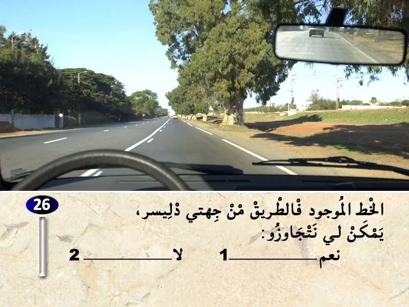
بيّن الجواب
الجواب الصحيح: 1
يوجد خطّين على الجهة اليسرى الخاصة بي واحد متقطع والاخر متّصل، بالنسبة للذي يعنني فهو أول واحد، وأول واحد هو خط متقطّع وفي هذه الحالة يمكنني تجاوزه (الخط الثاني المتّصل فهو يخص السيارات القادمة في الإتجاه المعاكس ولا يخصّني).
السؤال 27
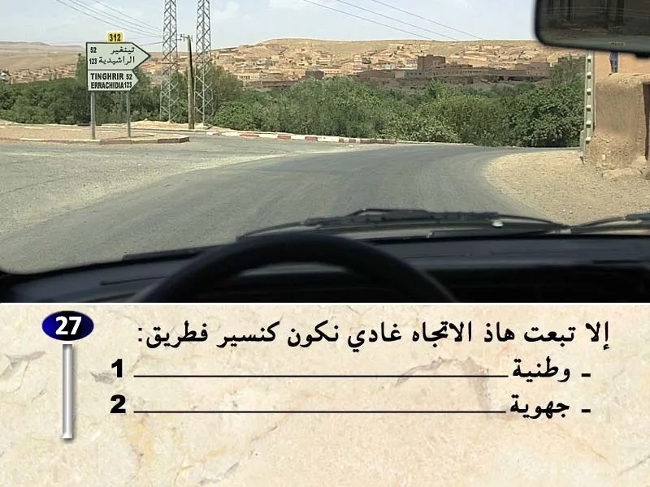
بيّن الجواب
الجواب الصحيح: 2
عندما تحتوي العلامة الطرقية على علامة طرقية صغيرة فوقها باللون الأصفر، فهذا اللون الأصفر يعني أن الطريق جهوية. (لو كان لونها أحمر سوف تعني أن الطريق وطنية، لو كان اللون أزرق فالطريق إقليمية، ولو كان اللون أخضر فالطريق غابوية) إذن في هذه الحالة إذا قمت بإتباع هذا الإتجاه فسوف أسير في طريق جهوية.
السؤال 28
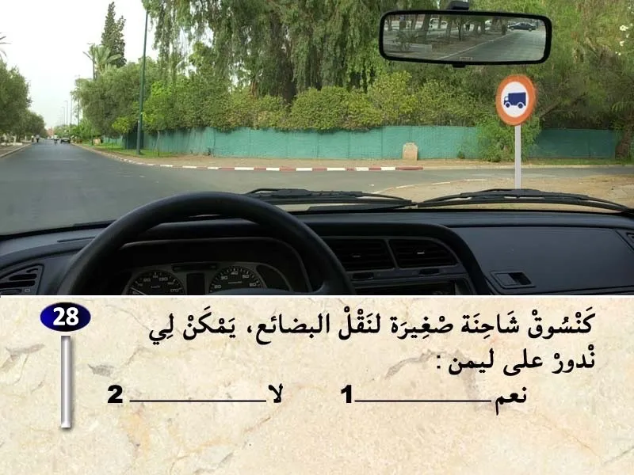
بيّن الجواب
الجواب الصحيح: 2
العلامة الدائرية الحمراء وسطها رسم شاحنة فهي خاصة بالمنع، وتعني: ممنوع مرور مركبات نقل البضائع (الشاحنات)، كيفما كان الحجم أو الوزن، إلا إذا كانت هناك لوحة تكميلية تحتها تحدد استثناء (مثلاً الوزن أكبر من 3,5 طن). في الصورة ما كاين حتى استثناء تحت العلامة، واللوحة متجهة نحو الطريق على اليمين، إذن المسلك اليميني ممنوع على جميع مركبات نقل البضائع. بما أنك كتسوق شاحنة صغيرة لنقل البضائع، فدخولك لذلك المسلك ممنوع. خاصك متنعطفش لليمين وتكمّل في اتجاه آخر أو تختار طريق بديلة. علامة دائرة حمرا فيها شاحنة = ممنوع على شاحنات نقل البضائع. ما كاين لا وزن ولا استثناء مكتوب يعني ما ندورش لليمين. الجواب الصحيح هو رقم 2.
السؤال 29
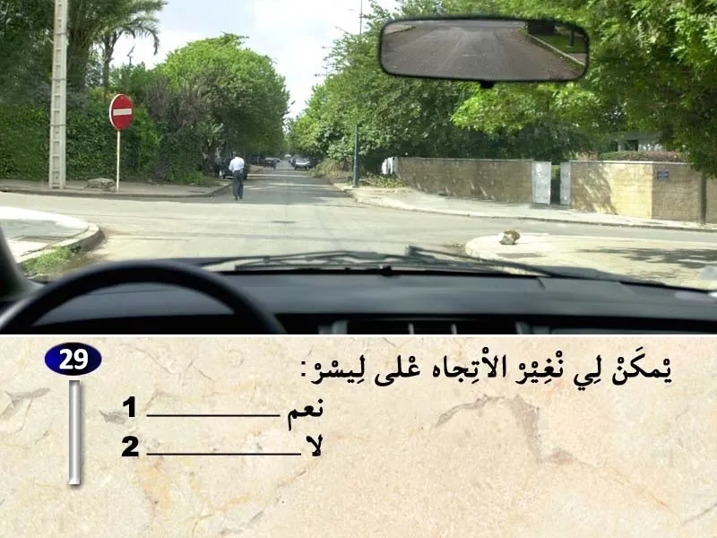
بيّن الجواب
الجواب الصحيح: 2
العلامة الطّرقية تمنعنا من المرور في ذلك الإتّجاه، يعني لا يمكنني تغيير الإتجاه غلى اليسار لأن العلامة الطّرقية تمنعني من المرور على اليسار.
السؤال 30
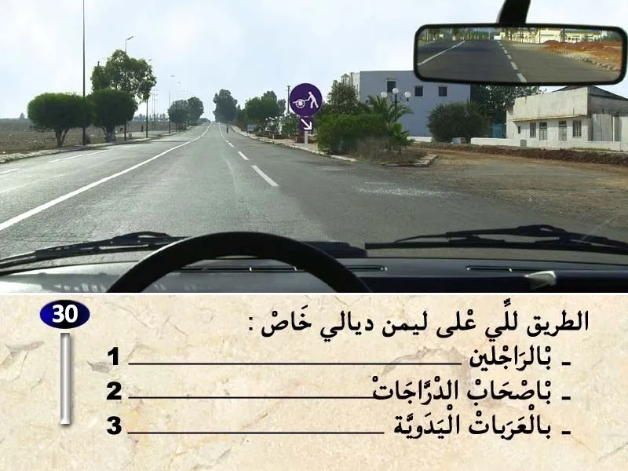
بيّن الجواب
الجواب الصحيح: 3
العلامة الطّرقية تعني مسلك خاص بالعربات اليدوية ويمنع على الأصناف الأخرى من العربات من السير فيه ويمنع كذلك عليها الوقوف والتوقّف لأنه مسلك خاص فقط بالعربات اليدوية (العلامت الزرقاء مثل التي توجد في الصورة ففي بعض المرات تعني خاص وفي بعض المرات الإجبار. وذلك على حسب الرمز الموجود داخلها). هذه الأنواع من العلامات الطّرقية فهي تبدأ من عند العلامة.
السؤال 31
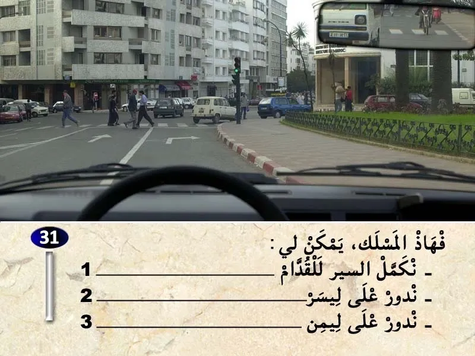
بيّن الجواب
الجواب الصحيح: 3
نتواجد في المسلك على اليمين وفي الأمام يوجد تشوير طرقي سهم مرسوم على الأرض وهو يشير إلى الإتّجاه والإجبار، وبما أنه يشير إلى اليمين فهو يجبرنا على الإنعطاف لليمين عند ملتقى الطّرق القادم.
السؤال 32
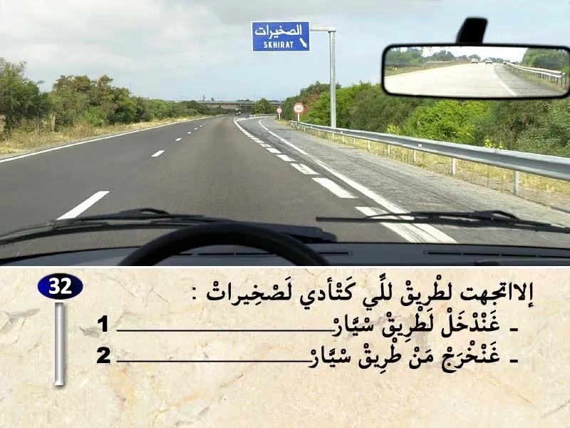
بيّن الجواب
الجواب الصحيح: 2
جميع العلامات الطّرقية التي تتواجد على الجهة اليمنى في الطريق السيّار والتي تشير بسهم إلى مسلك التباطئ فهي تشير إلى الخروج من الطريق السيّار. (لا تعني وصولنا إلى مدينة الصخيرات، لكن سوف نتواجد في طريق تؤدي إلى مدينة الصخيرات إذا قمنا بالخروج من الطّريق السيّاروالسير في هذا الإتجاه).
السؤال 33
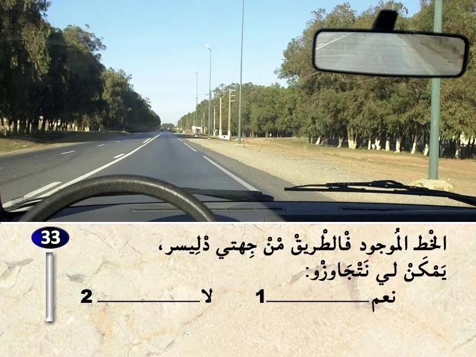
بيّن الجواب
الجواب الصحيح: 2
يوجد خطّين على الجهة اليسرى الخاصة بي واحد متقطع والاخر متّصل، بالنسبة للذي يعنني فهو أول واحد، وأول واحد هو خط متّصل وفي هذه الحالة لا يمكنني تجاوزه (الخط الثاني المتقطّع فهو يخص السيارات القادمة في الإتجاه المعاكس ولا يخصّني).
السؤال 34
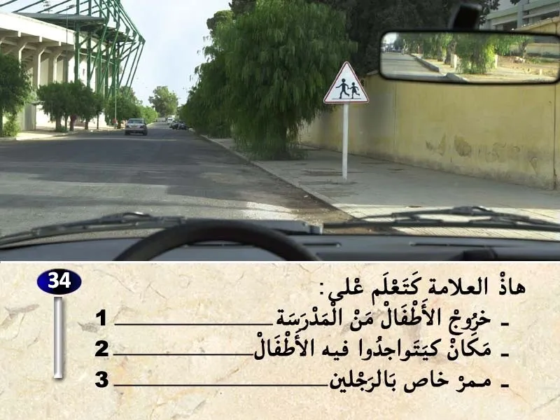
بيّن الجواب
الجواب الصحيح: 2
العلامة الطّرقية تعني خطر مكان يتواجد فيه الأطفال.
السؤال 35
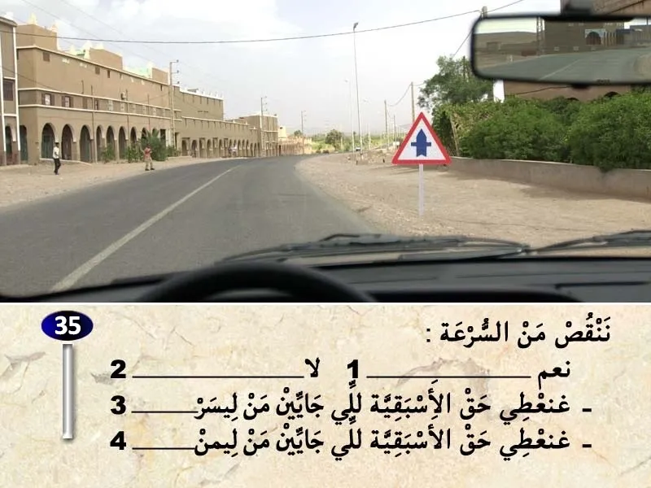
بيّن الجواب
الجواب الصحيح: 1
العلامة الطّرقية تعني أن الطريق ذات أولوية يعني أننا إقتربنا من ملتقى الطّرق، وملتقى الطّرق القادم تمّ تنظيمه بهذه العلامة الطّرقية الخاصة بأن الطّريق ذات أولوية بالنسبة لي يعني أن الأسبقية لي، هذا يعني أنه في ملتقى الطّرق القادم لن اقوم بإعطاء حق الأسبقية للسيارات القادمة من الجهة اليمنى وأيظا الجهة اليسرى لأن الأسبقية لي كما تشير إليه العلامة الطّرقية، فقط يجب عليّ الإنقاص من السرعة والإنتباه في ملتقى الطّرق. إذن الإجابة الصحيحة 1.
السؤال 36
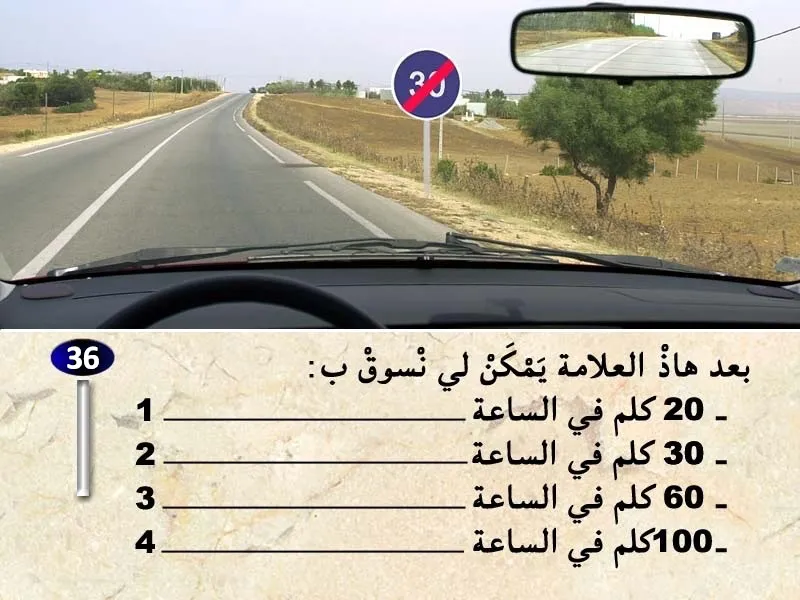
بيّن الجواب
الجواب الصحيح: 1 و 2 و 3 و 4
العلامة الطّرقية تعني نهاية السرعة الدنيا الإجبارية، قبل هذه العلامة الطرقية كانت لديها علامة مثلها ولكن بدون الخط الأحمر وسطها، والان لدينا هذه العلامة التي تشير إلى أنه الإجبار الخاص بالسرعة الدنيا 30 كلم في الساعة الذي كان سابقا قد إنتهى، والان أنا حر يمكنني السّير بأي سرعة قانونية، وبما أننا في طريق وطنية فيمكنني السير بأي سرعة نريدها في حدود 100 كلم في الساعة.
السؤال 37
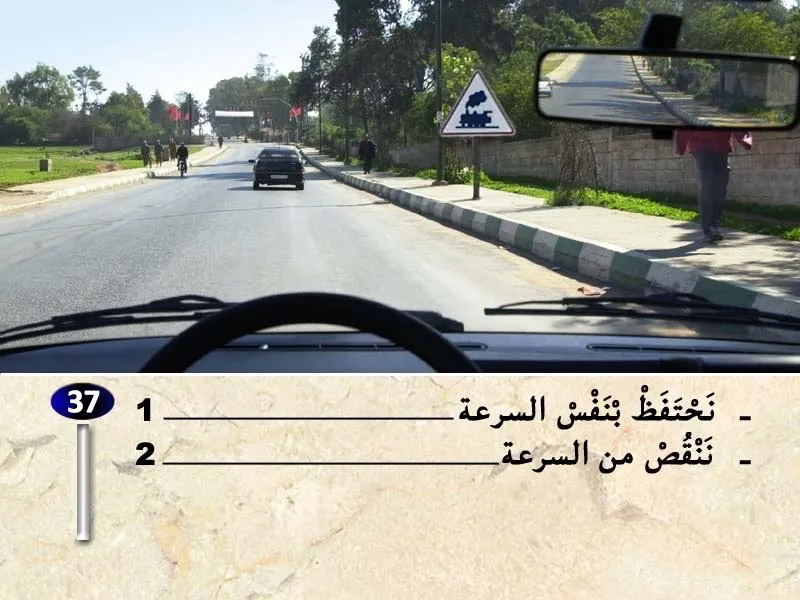
بيّن الجواب
الجواب الصحيح: 2
العلامة الطّرقية تعني خطر ممر السكة الحديدية بدون حواجز، وفي علامات الخطر فدائما يجب علينا أن نقوم بالإنقاص من السرعة.
السؤال 38
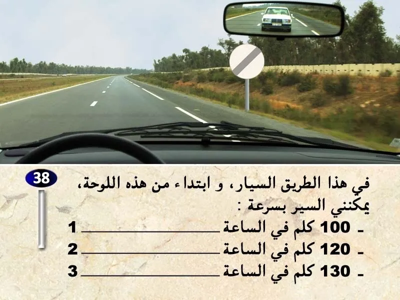
بيّن الجواب
الجواب الصحيح: 1 و 2
العلامة الطّّرقية تعني نهاية جميع أنواع المنع التي كانت سابقا إلأّ الوقوف والتوقّف هذه العلامة لا تقوم بنهايتهم، وفي السؤال يقول على أننا نتواجد في طريق سيار، إذن نفهم من هذا أن السرعة القصوى في الطريق السيار هي 120 كلم في الساعة، وبما أنه توجد علامة طرقية تنهي جميع أنواع المنع من السرعة التي كانت سابقا إذن يمكنني بما أنني أتواجد في طريق سيار أن أسير بسرعة 100 كلم في الساعة وأيظا يمكنني السير بسرعة 120 كلم في الساعة.
السؤال 39
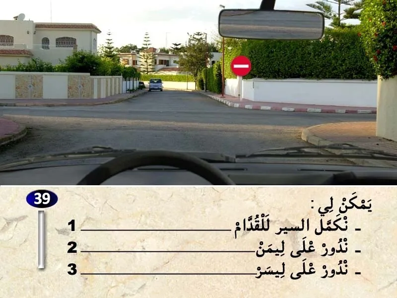
بيّن الجواب
الجواب الصحيح: 2 و 3
العلامة الطّرقية تعني أنه ممنوع المرور في ذلك الإتجاه أي ممنوع المرور للأمام مباشرة، لكن يمكنني الإنعطاف لليمين ويمكنني الإنعطاف لليسار لأن تلك العلامة الطّرقية لا تمنعني من الإنعطاف، تمنعني فقط من إكمال السير مباشرة.
السؤال 40
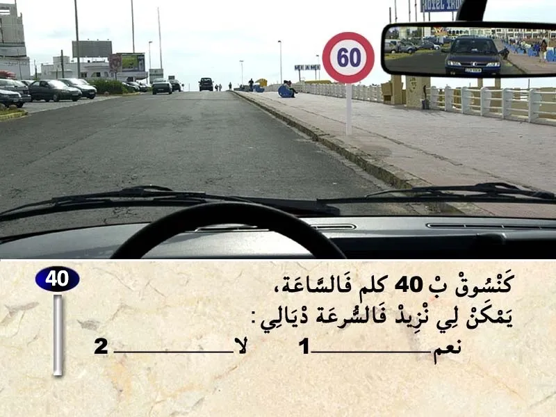
بيّن الجواب
الجواب الصحيح: 1
العلامة الطّرقية تمنعني من السياقة بسرعة أكثر من 60 كلم في الساعة، وبما أنني أسوق بسرعة 40 كلم في الساعة فيمكنني زيادة السرعة الخاصة بي لكن لا أتجاوز سرعة 60 كلم في الساعة.